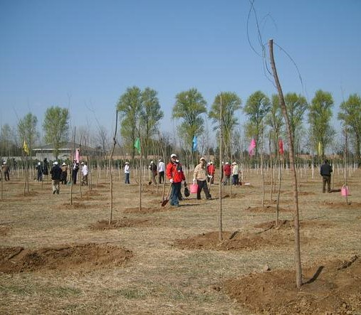
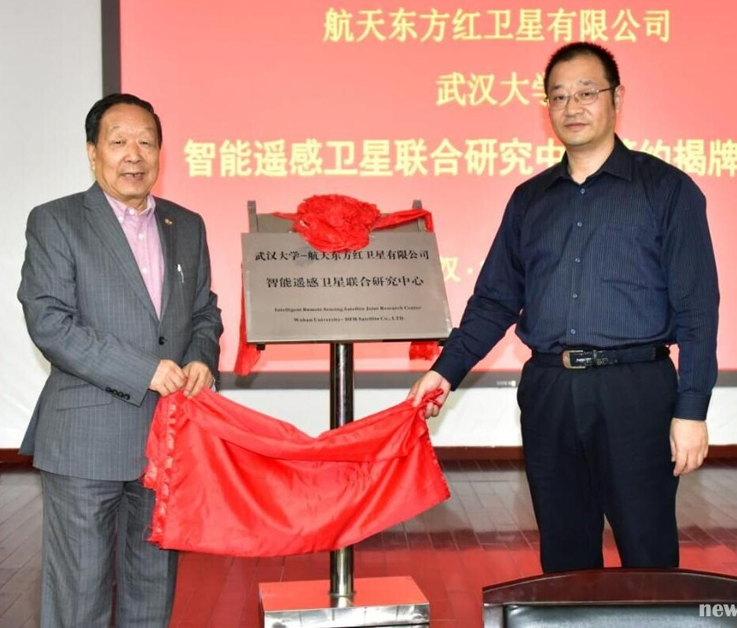
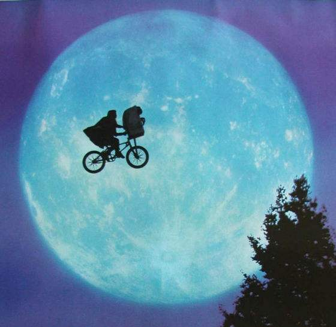
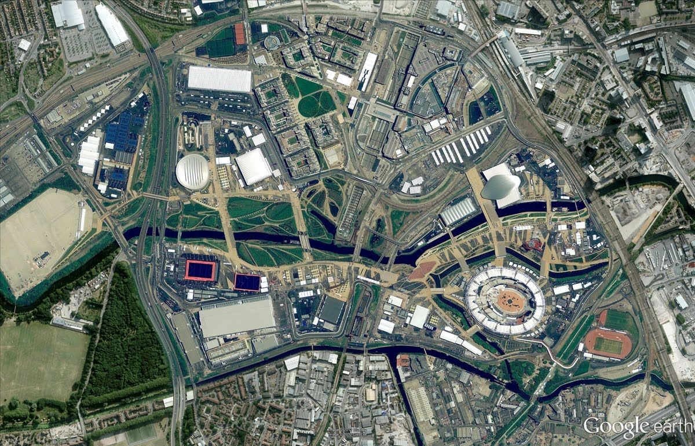
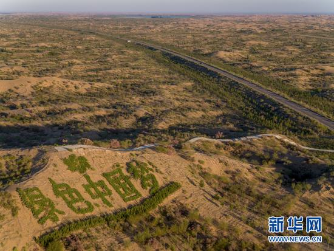
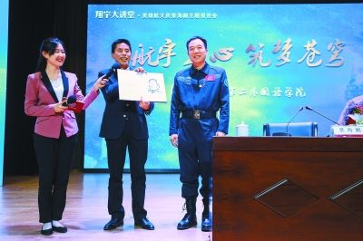
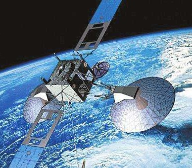

哈勃望远镜27周年纪念日照片：两个螺旋星系即将碰撞
美国宇航局哈勃空间望远镜即将迎来27周年纪念日（1990年4月24日启用），科学家们选定了一副美丽的星空图片作为献礼： 由望远镜观测到的处女座星系团两个即将碰撞的螺旋星系，NGC 4302和NGC 4298，并合成了美丽的星际照片。 边缘星系称为NGC 4302，倾斜的星系是NGC 4298.这些星系看起来完全不同，因为我们看到它们在天空的不同位置上倾斜。 他们的结构和内容实际上非常相似。从我们对地球的观点来看，研究人员报告指出，NGC 4302的倾角为90度，正对我们。NGC 4298倾斜了70度，呈椭圆形。 两个星系距离我们五千五百万光年，边缘NGC 4302的直径约为87000光年，约为银河系的60％。大约有1100亿个太阳的质量，大约是银河系质量的十分之一。 倾斜的NGC 4298的直径约为45000光年，约为银河系的三分之一。在170亿个太阳的质量，它的质量不到银河系质量的2%。 在NGC 4298中，显示的风车星系盘结构是可见的，但并不像其他一些螺旋星系那样突出。在边缘的NGC 4302中，星系盘中的灰尘映射到丰富的星光之上。 灰尘的吸收使得星系比其伴侣显得更黑和更红，一个大的蓝色区域似乎是最近形成的恒星。

英特尔开展2017"关爱地球 保护环境"植树活动
4月13日下午，由英特尔半导体（大连）有限公司和大连开发区循环经济促进中心联合发起的一年一度“关爱地球， 保护环境“主题植树活动在大连金普新区大李家街道小李家屯如期举行，这是连续第六届为纪念世界地球日而举行的主题植树活动。 英特尔半导体（大连）有限公司英特尔大连芯片厂厂长车广礼先生、大连开发区循环经济促进中心李恩鸿秘书长， 美国驻沈阳总领馆总领事梅如瑞先生代表主办方及活动单位分别做了简短发言。

强强联手为中国遥感卫星装“大脑”
4月24日，中国航天日，武汉大学与航天东方红卫星有限公司成立联合成立智能遥感卫星联合研究中心，签字揭牌仪式在我校举行。 出席仪式的有：航天东方红卫星有限公司总经理李向阳、副总经理姜军、总师杨芳，副校长李斐，院士李德仁、龚健雅等。 武汉大学王密教授团队与航天东方红卫星公司，就我国多颗光学遥感卫星的关键指标论证、设计开展了长期合作。此次双方合作成立智能遥感卫星联合研究中心， 旨在给中国未来遥感卫星装上“大脑”，进一步合作研制和发射智能遥感试验卫星，通过遥感卫星和通讯卫星的集成， 实现通过手持移动终端为用户提供实时智能全球遥感服务，引领未来遥感技术应用发展。 航天东方红卫星有限公司成立于2001年5月，主要从事小卫星和微小卫星的开发研制、卫星应用工程系统设计和产品开发研制。经过十余年发展， 开发了CAST100、CAST968、CAST2000、CAST3000等多个现代小卫星公用平台，形成了覆盖10Kg到1500Kg小卫星的公用平台型谱，已成功发射了64颗卫星， 目前55颗卫星在轨运行，约占我国在轨卫星的1/3。

外星文明果然来过地球：一堆新证据惊人
据英国《每日邮报》4月25日报道，美国大学教授杰森-莱特(Jason Wright)在一篇关于远古物种的报告写道，外星人在数十亿年前就曾在地球、 金星或火星上生活过，人类最可能在地下找到外星人的生活痕迹。太阳系是否有外星生命存在或是存在过呢？数十年来，这一大疑难问题都未曾得到解答。 现在，美国空间科学家杰森-莱特教授认为自己可能找到了答案。莱特教授是宾夕法尼亚州立大学天文与天体物理学系教授。 他表示，“技术”外星人可能曾在太阳系的某个星球上生活过，之后便消失得了无踪迹，可能我们很快就可以发现他们所留下的“技术痕迹”。 莱特说：“原生技术物种可能曾在远古地球或是其他星球，比如温室效应前的金星或是潮湿的火星上生活过。”但是到现在， 外星人存在过的痕迹可能已经消失不见了。以金星为例，全球温室效应的到来和潜在的表面重建可能已经抹掉了外星人存在的一切证据。 而在地球上，就算外星物种数十亿年前曾在此生活过，侵蚀和板块构造也可能已经将大多数证据销毁。这样，科学家能找到外星人生存痕迹的地方就很少。你了解“世界地球日”的 打开方式吗？
4月22日是一年一度的世界地球日（Earth Day）。它由盖洛德·尼尔森和丹尼斯·海斯于1970年发起，是一个专为世界环境保护而设立的节日， 旨在提高民众对于现有环境问题的意识，并动员民众参与到环保运动中，通过绿色低碳生活改善地球的整体环境。

“谷歌地球”大版本更新：想让你沉醉在美丽的地球
Google地球在世界地球日当天发布了最新的一次大版本更新，给这款Google的这款老牌口碑产品带来了全新的理念。不管你以前有没有玩过， 最新的这款Google地球想要给你的体验是比在朋友圈好的多的“虚拟旅游”体验，同时Google地球也在这个版本与Google地图的差异化变得更明显。 因为Google说了，地图是为了让你找到，而地球是为了让你迷失，想想如果能在上班焦虑期间，对着电脑屏幕稍微“迷失”一会，应该也不是什么坏事。

美《国家地理》沙漠摄影师：库布其治沙留住了年轻人、留住了希望
专注于全球沙漠风光拍摄近20年，乔治·斯坦梅茨几乎跑遍了全球所有极端沙漠，在被沙漠风光深深吸引的同时，他也为沙漠留不住当地的年轻人而感伤。 2016年9月，斯坦梅茨第一次来到中国最东部的库布其沙漠。近1.8万平方公里的沙漠，三分之一被绿植覆盖，他被这一幕深深震撼，“感谢库布其人民， 守住了沙漠向东扩张的最后一道防线。”这是斯坦梅茨第二次来到库布其，他说：“我这次计划拍沙漠里的人如何在春天里播种、植树， 要为世界讲述更详尽的库布其治沙故事。”斯坦梅茨向记者展示了去年航拍的库布其沙漠的照片，视角广阔、清晰、全面。 他说：“我喜欢航拍，这样可以鸟瞰到每一块土地如何被利用，每一片土地下民众如何在生活。”

景海鹏对话二外学子 “宇宙这么大希望大家都能去看看”
首位三次“飞天”的英雄航天员景海鹏前来对话二外学子，讲述自己的航天情缘。“我早该来了，因为我与咱们学校有缘呐。” 景海鹏的开场白瞬间拉近了与大学生的距离。原来，景海鹏的生日与二外的校庆日是同一天。开场之初，景海鹏一再要求工作人员将自己台上的灯光调暗， 将底下同学的灯光调亮，景海鹏戏称自己双眼2.0的视力可以将底下同学的表情尽收眼底，“你睡着了，我还没看到，那可不就麻烦了。”玩笑归玩笑，景海鹏说， 希望做出这样的调整后，能让这场报告成为一场平等的交流和互动。
